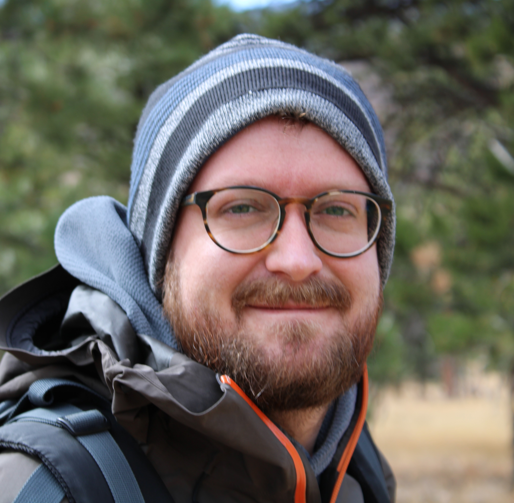

Nicholas Landry
 I’m the TGIR Postdoctoral Research Fellow at the University of Vermont. My research expertise is broadly the study of dynamics on complex systems, especially the spread of contagion on interaction networks involving group (higher-order) interactions. My research always starts with noticing things around me and asking, “why?” I’ve worked in both academia and industry which gives me a unique perspective on applied mathematics.
My portfolio is a collection of some projects that I’ve worked on personally, professionally, and academically. For more about me, see my bio, CV, or list of publications. You can also take a look at my blog.
Research Interests
- Complex systems (particularly those involving higher-order interactions)
- Contagion spread (disease, opinions, etc.)
- Dynamical models of political processes
- Dynamical systems
Recent News
- November 2022: I am now on Mastodon! My username/instance is nwlandry@mathstodon.xyz.
- October 2022: I gave a demo of XGI and presented in-progress work on the polarizability of hypergraphs with community structure at CCS 2022 in Palma, Spain.
- October 2022: I gave an invited talk on the polarizability of hypergraphs with community structure at the AMS Eastern Sectional Meeting in Amherst, MA.
- August 2022: Juan G. Restrepo and I organized and chaired the Contagion on Complex Social Systems workshop in Boulder, CO! (Photo)
- July 2022: I gave a demo of XGI and presented in-progress work on polarization of hypergraphs with community structure at NetSci 2022.
- July 2022: I participated in a hackathon in Portland, ME hosted by NetSci at Northeastern.
- June 2022: I started as my position as the TGIR postdoctoral fellow at the University of Vermont!
- May 2022: Joint work with Juan G. Restrepo, Hypergraph assortativity: a dynamical systems perspective is published in Chaos as part of the Dynamics on Networks with Higher-Order Interactions special issue.
- May 2022: Joint work with jimi adams on the limitations of using uniplex data representations for modeling multiplex contagion is now available on the ArXiv.
- March 2022: I gave a talk at NERCCS 2022 on how community structure in hypergraphs can lead to polarization and won Best Oral Presentation.
- March 2022: I defended my dissertation and am now a Doctor of Applied Mathematics!
- February 2022: I performed in a concert as a member of a 5-piano ensemble!
- February 2022: I accepted a position as the TGIR postdoctoral fellow at the University of Vermont, working with the Complex Systems Center and the TGIR Center under Jean-Gabriel Young and Laurent Hébert-Dufresne!
- January 2022: I presented a poster at Dynamics Days on how community structure in hypergraphs can lead to polarization!